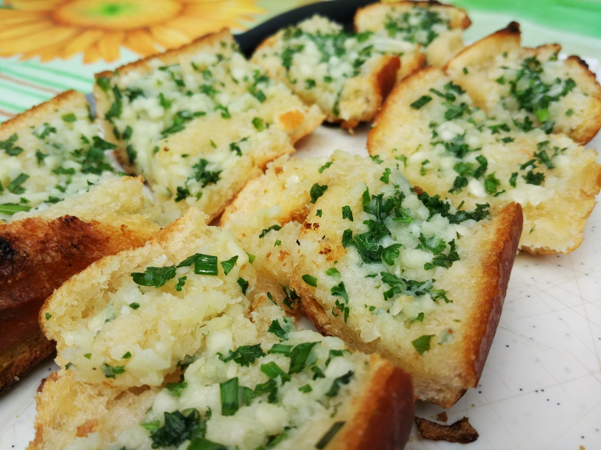

Garlic Bread

Freshly sliced Garlic Bread!
Two slices of fresh Garlic Bread straight out of the oven!
Ingredients
- 1/2 cup butter, melted
- 3 to 4 garlic cloves, minced
- 1 loaf (1 pound) French bread, halved lengthwise
- 2 tablespoons minced fresh parsley
Steps
- In a small bowl, combine butter and garlic. Brush over cut sides of bread; sprinkle with parsley. Place, cut side up, on a baking sheet.
- Bake at 350° for 8 minutes. Broil 4-6 in. from the heat for 2 minutes or until golden brown. Serve warm.